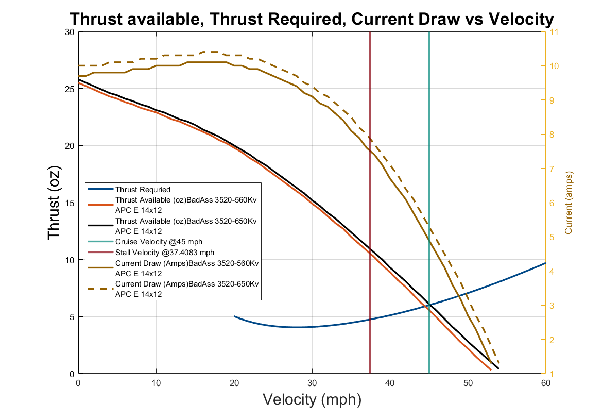
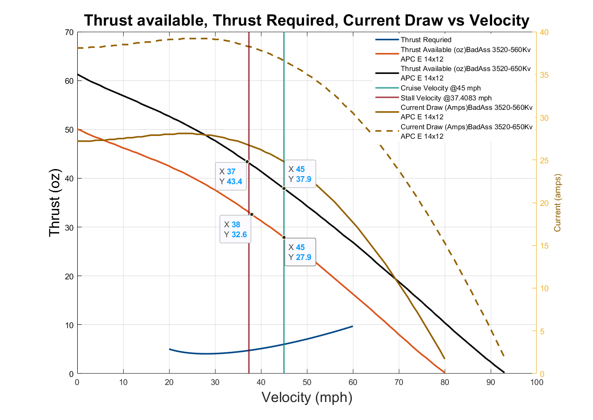
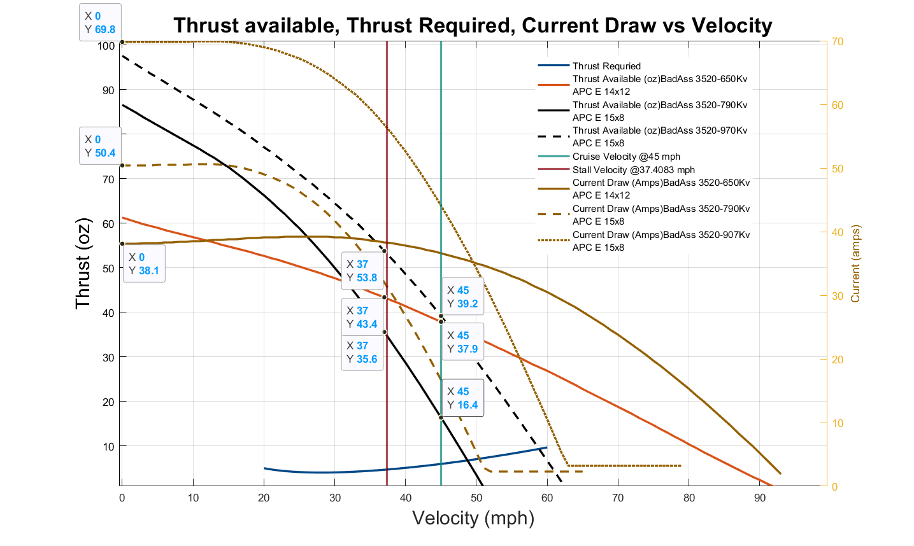

OpenUAS Version 1.0
Christopher Johannsen, Marcella Anderson, William Burken, Ellie Diersen, John Edgren, Colton Glick, John Levandowski, Evelyn Moyer, Taylor Roquet, Alexander VandeLoo, Stephanie Jou and Kristin Yvonne Rozier
This webpage contains supplementary data for "OpenUAS Version 1.0" by C. G. Johannsen, M. Anderson, W. Burken, E. Diersen, J. Edgren, C. Glick, J. Levandowski, E. Moyer, T. Roquet, A. VandeLoo, S. Jou and K. Y. Rozier.
Supplementary Motor Calculations
| Data (Propellor) | Badass 560kv | Badass 650kv | Badass 710kv | Badass 790kv | Badass 970kv | Hacker A30-10XL v4 |
|---|---|---|---|---|---|---|
| Current (12x10) | 5.1A | 5.1A | 4.8A | 5.1A | 5.4A | 5.2A |
| Current (13x10) | 5A | 4.7A | 4.8A | 5.2A | 5.5A | 4.8A |
| Current (14x10) | 4.7A | 4.4A | 4.9A | 5.3A | 5.2A | |
| Current (14x12) | 4.5A | 4.9A | 4.5A | 5.8A | 5.5A | 5.2A |
| Current (15x8) | 4.5A | 5.2A | 4A | |||
| Efficiency (12x10) | 53.6% | 54.2% | 56% | 51.2% | 48.4% | 54.2% |
| Efficiency (13x10) | 53% | 53.6% | 55.8% | 51.1% | 48.5% | 53.3% |
| Efficiency (14x10) | 51.6% | 51.5% | 55.4% | 47.4% | 53.5% | |
| Efficiency (14x12) | 55.5% | 57% | 57.3% | 55.1% | 50.8% | 55.9% |
| Efficiency (15x8) | 34.3% | 34.2% | 37.9% |
The BadAss 560kv with a 14x12 appeared to have the best numbers although the BadAss 650kv with a 14x12 appeared similar with a better efficiency, though with a higher current draw.

Looking at these two motors and prop combinations excess thrust:

Here it seems the 650kv has a higher access thrust over the entire velocity range than the Badass 560kv.
Assuming we can get a theoretical takeoff speed of 37mph, both these combinations will work, but the Badass 650Kv looks to be a good configuration that balances both efficiency with excess thrust, without drawing a lot of current. However to maximize thrust output, the team should use the BadAss 970kv with a 15x8 propellor. Although the 970 and the 15x8 prop have the lowest efficiency and highest current draw, this combination produces the most excess thrust out of any other combination, and would give the OpenUAS the most leeway during takeoff.
